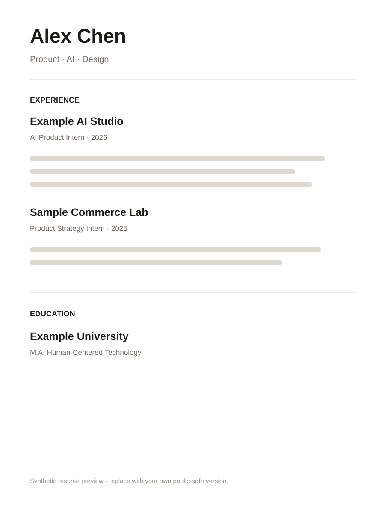

Lead with a point of view
Make the first screen explain your direction in seconds.
A clean five-page portfolio template for people who want to present experience, projects, and skills without a frontend build system.
Use the structure to answer the questions a visitor actually has: who are you, what have you done, how do you work, and what can you build?
Make the first screen explain your direction in seconds.
Pair concise project writing with product visuals, flows, and outcomes.
No framework lock-in. Search, replace, publish.
